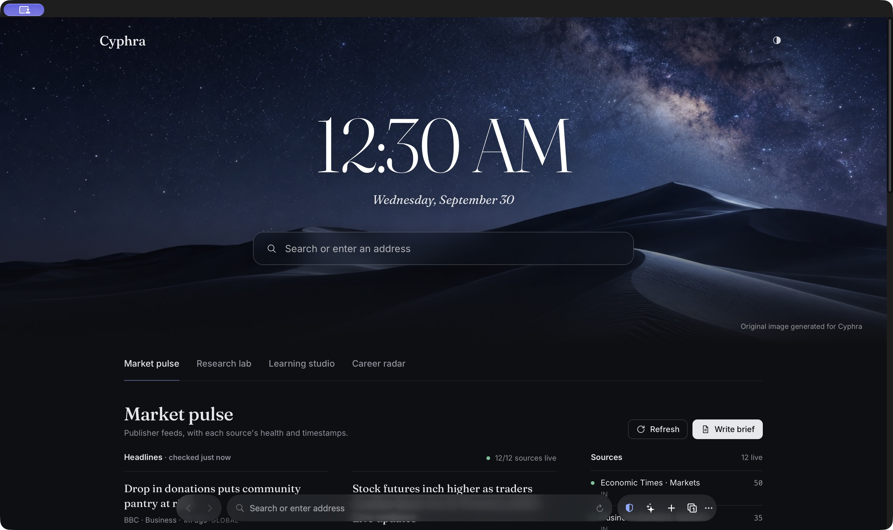

macOS
AvailableCyphra 1.2.0 · Universal
macOS 14 or newer
Apple silicon and Intel
Official downloads
Verified desktop installers only. No source code, telemetry, account, or package manager.

Cyphra 1.2.0 · Universal
macOS 14 or newer
Apple silicon and Intel
Cyphra 1.2.0 · x64
The verified installer remains on the Windows build machine and has not been uploaded from this Mac.
Installer not available yetThis build is ad-hoc signed because no Apple Developer ID is installed. Control-click Cyphra, choose Open, then confirm. Public notarization is pending.
Run shasum -a 256 Cyphra-1.2.0.dmg or download the checksum file.